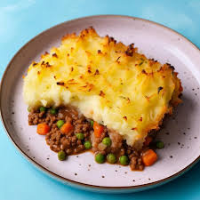

Cottage Pie

Description
Cottage pie is a delicious English classic. A lovely winter warmer. Perfect with some brown sauce :P
Follow the recipe below to join the cottage pie club!
Ingredients
- 750g Mince
- 1 Medium Onion
- 2 Carrots
- 500g Potatoes
- 750ml Beef or Vegetable stock
Steps
- Finely chop the carrots and onion, and cook over a gentle heat with a little oil until soft.
- Add the mince and brown.
- Add the stock and simmer for 40 minutes.
- Boil and mash the potatoes
- Lay out the filling into a dish and top with the mashed potato
- Top with cheese and place in the oven at 180 for 10 minutes.